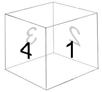

這篇要介紹 jQuery Mobile 一個鮮為人知但又非常好用的功能：觸控！在使用行動版網頁或是製作 hybrid App 的時候，觸控通常都是一個大問題，一個單純區分 tap 和 mousedown、mouseover 之類的行為，可能都會讓程式變得十分複雜，好加在，jQuery Mobile 替我們解決掉了這個問題，既有的五種觸控事件，涵蓋了基本的手勢行為 ( 當然多點觸控就沒辦法了 )，因此我就利用觸控事件，搭配 CSS3 的 transform 3D ，做出立體又酷炫的切換效果！
範例連結：
結合 JavaScript 應用 - 滑動頁面立體切換效果
要實做滑動切換頁面，必須要先了解五種觸控的事件：
用法更簡單了，就是 jQuery 的語法 on.('tap',function(){})或 on.('swipe',function(){})，跟一般按鈕點擊事件綁定的情形幾乎一模一樣，也因為如此，就更能將心力放在特效或內容的細節處理。
接著我先介紹一下 HTML 的結構，主要就是一個名為 box 的 div 包著四個小 div
<div id="box" onselectstart="return false">
<div id="box1" class="box-child">1</div>
<div id="box2" class="box-child">2</div>
<div id="box3" class="box-child">3</div>
<div id="box4" class="box-child">4</div>
</div>
利用 css 讓四個小 div 在 box 內排列成下圖這樣 ( 詳細的 CSS 可以直接點選 範例，從右邊選擇 CSS 編輯面板參考 )：
接著我們只需要讓包著四個 div 的 box，每次滑動或點選按鈕的時候，都旋轉 90 度，就可以辦到立體的切換效果，不過這裡有個要注意的地方，就是 transform-type這個屬性要記得設為 preserve-3d，這是把 box 宣告為一個立體的物件，否則預設值是 flat ，看到的四個小 div 就會疊在一起，不會立體囉！
再來看到 js 的部分，在我做的範例裡頭，是先在下方四顆按鈕綁上 on.('click',function(){}) 事件，然後每次滑動的時候，就會觸發相對應的按鈕，為什麼要這麼做呢？因為我也希望滑動時按鈕也會對應著變色，為了讓判斷更為單純，於是就只把切換角度的行為綁在按鈕上，才不需要多做一次判斷，下面的程式是第一顆按鈕的 JS，angle 是一開始就宣告好的角度變數，主要是讓 box 知道現在的角度是多少。
$('#b1 a').on('click', function () {
$('#box').css({
'-webkit-transform': 'rotateY(0deg)',
'-moz-transform': 'rotateY(0deg)',
'transform': 'rotateY(0deg)'
});
angle = 0;
});
這是往左滑動的 JS，要做一個角度的判斷，這裡寫的比較簡單，就是滑到 1 的時候就不會動了
$('#home').on('swipeleft', function () {
if (angle <= 0 && angle > -270) {
angle = angle - 90;
switch (angle) {
case -90:
$('#b2 a').click();
break;
case -180:
$('#b3 a').click();
break;
case -270:
$('#b4 a').click();
break;
}
}
});
如此一來，藉由滑動觸發按鈕，就可以做出相當精準的切換動作，搭配 CSS3 的 3D transform 效果，就能呈現相當立體的轉場效果，當然，也可以利用動態的去計算旋轉的角度，就能做出更多張頁面的旋轉，拿來做為相簿或是一些桌面都是相當的方便好用喔！
最後再看一次範例：
結合 JavaScript 應用 - 滑動頁面立體切換效果